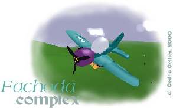
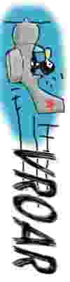
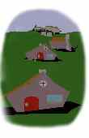
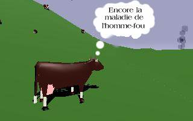

DOCUMENTATION
(c)
Cédric Cellier, 2000 
La
propriété c'est le vol
Survol du produit
Matériel recquit pour accéder au
virtuel
Gloriole
en solitaire
Vol en réseau
kill'em all !
Les
trois petits avions
Partir sur de bonnes bases
Les tanks
Villes et campagnes de bombardement
Premier
vol, premier crash
Manoeuvrer la souris comme un manche
Tableau de bord
Visions para-normales
Promenade sur le gazon
Interagir avec l'environnement (faire feu)
Moteurs
et décollage
Comment perdre de l'altitude
Navigation
à la carte
Communication entre joueurs
Mode
voyeur
Pilote
automatique
Mode accéléré
Mode facile
Espionner les pilotes
Comptabilité du score
Sonnette d'alarme
Dogfight
Le programme de Fachoda Complex, les données, la documentation, etc... sont la propriété de moi, dont le nom figure sous l'image du titre.
Malgré le fait que je ne
renonce pas à cette propriété, cette version du
programme est librement diffusable, copiable, par toute
personne n'en tirant aucun profit commercial (ce qui est
impossible puisque les télécoms, la poste, les providers,
etc, en tireront forcément profit), pour autant qu'il soit transmis
intégralement, c'est à dire avec tous les fichiers de
l'archive originale.
Fachoda est un simulateur d'avions militaires, en plus ridicule. Il est vrai que souvent les avions militaires sont déjà ridicules, avec leurs bombes, leurs missions, leurs noms de guerre, leurs insignes et leurs héros, et on peut dire que Fachoda est un simulateur aux traits forcés.
C'est aussi un simulateur de vol minimaliste dans le sens où, n'ayant pas trop la foi en la vertu culturelle des jeux vidéos, j'ai préféré réduire au minimum l'aspect jeux de rôle au profit de l'aspect sainement ludique. Pas de mise en situation donc, mais juste quelques paramètres en ligne de commande. Le simulateur en tant que tel en souffre t-il ? À l'heure où des compagnies de softs sortent sur le marché du jeu vidéo des simulateurs de vol guerriers comme argument commercial et propagandesque en faveur des véritables appareils, je pense qu'il y gagne.
Cependant, afin de fournir de
bonnes raisons de tuer leur monde à ceux qui prennent plus de
plaisir à s'imaginer dans la peau d'un véritable pilote
qu'à manoeuvrer un faux appareil contre des potes ou des
routines d'intelligence artificielle, quatres scénarios de
quelques lignes ont étés imaginés.
Fachoda tourne sous X Window en mode 16, 24 ou 32 bits, et nécessite absolument un coprocesseur MMX.
Une carte 3D est par contre inutile, superflue, condamnable, ainsi que toute librairie graphique autre que XWindow lui même et libjpeg (sauf pour les versions SDL ou ClanLib, auquel cas ces librairies sont nécessaires Cf http://www.devolution.com/~slouken/SDL et http://www.clanlib.org )
Il n'y a pas moyen de se passer de souris.
Lorsque fachoda n'arrive pas à se connecter à fachodasrv, le jeu démarre en mode monojoueur. Il n'y a alors pas d'autre but que celui d'accumuler de l'argent. Ce qui se fait en démolissant à peut près tout, cibles ennemies et même amies lorsqu'elles sont primées.
En effet des primes spéciales apparaissent de temps en temps dans le jeux pour rendre prioritaire la destruction de certaines cibles, quitte, donc, à brutalement limiter le principe d'amitié.
Tu en es averti par un message précisant la nature et la position de la cible. Pour t'aider à la localiser, une petite tête de mort violette (pur design mimi-cracra studio) est affichée sur la carte par dessus le symbole de la cible.
Il peut y avoir jusqu'à cinq ou six primes actives en même temps si bien que tu n'es pas forcés de te jeter sur chaque prime comme un mort de faim. Toutefois si tu ne complète aucune mission on ne t'en proposera plus.
N'espere pas tenir longtemps si tu néglige cette source de revenu, car il te faut payer pour chaque réapprovisionnement en arme et en fiul, et pour toute réparation.
Tu peux également utiliser ton argent pour changer d'appareil (si tu prend un appareil moins cher tu empoche la différence).
Lorsque tu gagne ou perd de l'argent, le montant s'affiche en grand sur l'écran (bleu pour les crédits, rouges pour les débits), puis ton solde en blanc.
Dans ce type de jeu, lorsque tu
détruis ton appareil tu continue dans un autre appareil d'une
valeur égale ou inférieure à celui que tu viens
de détruire, et qui était jusque-là piloté
par un robot. A condition qu'il y en reste. C'est ainsi que ton sort
est un peu lié à celui des drones de ton camp : s'ils
ne survivent pas, tu ne te survivras pas non plus à toi même.
Voilà pourquoi il est important, quand tu as de l'argent, de
revenir acheter un modèle supérieur d'avion : tu
augmente ainsi le nombre (et la qualité) des appareils de
rechange possibles.
Une
résurrection te coute tout ton capital, sauf $55.
Les sceptiques qui doutent de
l'immortalité de l'ame sont condamnés à utiliser
l'option -mortel.
Il est aussi possible de jouer en réseau. Le jeu prend alors une autre tournure. Bien sur on peut continuer de jouer comme avant, chacun essayant d'avoir un meilleur score que les autres, mais il n'y a alors aucune entraide possible. Pour des parties plus intéressantes on peut se fixer soit même ses propres règles du jeu, du style "est déclaré gagnant le dernier camp à avoir encore des villes debout", oubien moins génocidaire : "est déclaré gagnant le premier camp qui trouve et détruit les bases ennemies", oubien "qui détruit 10 avions ennemis", etc... On n'a pas besoin qu'une machine nous impose sa façon de jouer.
Pour jouer en réseau, une machine doit lancer le serveur "fachodasrv" en indiquant en ligne de commande le nombre de joueurs. Puis chaque joueur lance fachoda sur sa machine en indiquant en ligne de commande le nom de la machine sur laquelle a été lancée le serveur. Il peut aussi rentrer le nom de son pilote, le camp pour lequel il souhaite s'engager, etc... Une fois tous les joueurs connectés, tous se retrouveront sur le tarmac d'une base de leur territoire.
Lors d'un jeu en réseau, le nombre de drones est de tanks est évidement le même pour tous les joueurs. Le programme égalise les divers choix vers le bas.
De plus, le mode facile est désactivé et l'option '-mortel' est forcée (cf ligne de commande)
Exemple :
Riri, Fifi et Loulou veulent trancher un différent dans les airs. Sur sa machine qui s'appelle raspoutine, Riri lance d'abord le serveur, puis le client, en précisant son nom de guerre et le nombre d'adversaires pilotés par l'ordinateur qu'il désire (400 tanks et 10 drones) :
# fachodasrv 3 &
# fachoda -name "Riri
the hood" -tank 400 -drone 10
Note qu'il n'a pas besoin de préciser au client le nom de la machine qui fait tourner le serveur puisque c'est la même (le serveur par default est localhost).
Sur sa machine nommée machiavel, Fifi qui n'aime pas les tanks mais aime bien les drones, lance :
# fachoda -name "Allmighty Fifi" -tank 20 -drone 60 -host raspoutine
et sur sa machine nommée richelieu, Loulou lance :
# fachoda -host raspoutine -name "Loulou power" -camp 2
Les trois se retrouveront bientôt dans les airs avec autour d'eux 10 drones et 20 tanks répartis à peut près également entre les quatre camps.
Lorsqu'un joueur quitte le jeu en mode réseau,
son appareil se retrouve sans pilote, moteur coupé, et va
aller se planter dans le décors. Les autres pendant ce temps
continuent la partie.
Il existe également un mode de jeu particulier, accessible en mode mono ou multi-joueur. Ce mode est enclenché pour tous les joueurs si l'un d'entre eux spécifie l'option '-killemall'.
Dans ce mode tu peux revivre
les meilleurs moments de la guerre, la vraie ! Dans ce mode tous les
appareils du jeu sont lancés les uns contre les autres avec
une soif d'extermination sans mesure. Une seule question, un seul
dilemme : auras-tu assez de munitions pour faire jaillir les tripes
de tous ces rats ? Distinguer dans cette nuée de guêpes
les amis des ennemis constitue une réelle gageure ; gageure
que je t'invite à dépasser en ne cherchant pas à
distinguer et en massacrant amis comme ennemis ! ``Ça leur
fera la bite !'', comme disait mon adjudant. Ahaha !
Les renforts arrivent régulièrement toute les minutes à peu près jusqu'à
épuisement des troupes.
Un conseil : même si tu as l'impression que dans ce mode tes bombes
ne servent à rien, gardes-en quand même une ou deux pour finir
plus facilement des avions qui seraient tombés au sol sans exploser.
Le spotwill (l'Aieul)
Un antique biplan. Je parri que t'arrivera pas à t'arracher du sol avec, pourtant il tient très bien en l'air. Sa faible vitesse peut etre source d'ennuis pour les adversaires aussi.
Donné : $300.
Puissance
moteur : je ne pense pas.
Armement : finalement équipé d'un tromblon poussif qui tire lorsqu'il n'est
pas enrayé.
Grandes impressions de vols, belles balades dans les airs, souvenirs
innoubliables, mort tragique.
Le Dewoitine (la chèvre)
Il s'agit d'un champêtre Dewoitine 501, c'est à dire d'un cercueil avec des ailes. Si tu croise dans le ciel un goéland colérique tu es en danger. C'est une telle prise de risque de voler avec que l'on peut considérer comme une sécurité le fait qu'il soit si difficile de l'arracher du sol. A n'utiliser que pour s'exercer au pilotage, oubien avec l'engagement écrit que tes adversaires s'envoleront avec la même vieille toile pour un antique duel d'antant.
Vendu au prix de la ferraille :
$1000.
Puissance
moteur : 50 chevaux vapeurs en poussant un peu.
Armement : deux pétoires
à gros sel de récupération (600 gros grains), et
deux bombinettes artisanales.
Bonne affaire pour les
collectionneurs.
Le Bogoplane
Sorte d'avion-jouet à la cadense de tir très faible, mais au moteur un peu plus puissant que celui du Dewoitine. Bel intérieur. Enfin, je trouve.
C'est l'avion dans lequel la partie commence.
Prix : $2000
Puissance moteur
: tondeuse à gazon trafiquée.
Armement
: Parfois ça tire. Trois grosses bombes bien mures attachée
sous les ailes, prètes à tomber.
Le Corsair
Cet avion est un espèce de rescapé de la guerre du pacifique. Son moteur permet toutes les cabrioles à condition de le lancer un peut. Il a une autonomie en carburant, en munitions et en bombes suffisante pour s'éloigner à l'autre bout du "monde" et revenir.
C'est l'avion le plus facile à manoeuvrer.
Prix : $5000
Puissance moteur :
certainement.
Armement
: 4 grosses bombombes, 800 balles au pH neutre pour la peau.
Un bon choix pour commencer.
Le Sptiflame
La classe. Beau, maniable, puissant, bien armé. Mon préféré, et celui qui me donne la faiblesse de penser que je me débrouille pas mal avec Amapi.
Prix : $6000 mais c'est donné
Puissance moteur : Assez pour s'enfoncer dans le sol de plusieurs
mètres.
Armement
: Quatres beaux cannons, pleins de bombes.
Le Moshito (le pou)
Il est laid et décoré avec mauvais goût par mimi-cracra. J'en suis désolé mais en compensation il dispose de quatre grosses machines à faire des trous à uranium enrichi et de deux moteurs à déraciner les platanes. Contre eux la pesanteur ne fait plus le poids.
Tiens lui la bride sans quoi tu te transformeras certainement en gros obus incontrôlable et tu risquerais d'abimer une montagne.
Prix : $7000
Puissance moteur : à
décoller le papier peint des murs.
Armement
: takatakatakatakatakatak !
Tout est dit.
Le monde est découpé en quatre. Chacun de ces camps possède trois bases militaires. Et parfois aussi quelques villes, parcequ'il faut bien des civils pour entretenir l'armée.
La base sur laquelle tu démarre est l'unique base qui pourra te réapprovisionner.
Le réapprovisionnement a lieu lorsque l'avion est arrêté près des bandes de stationnement au bout de piste.
Par
réapprovisionnement il faut entendre : réarmement,
plein de fiul, guérison de l'appareil et réparation du
pilote, et éventuellement changement d'appareil. Et comme il
n'est pas bon qu'un service soit gratuit, voici les tarifs :
|
Bien de consommation |
prix |
|
bombe |
$200 |
|
chaque balle |
$1 |
|
plein de fiul |
autour de $400 |
|
réparations |
fonction de la gravité |
Lorsque tu roule sur la piste, prend garde à ne pas heurter un drones. Ceux-ci roulent s'en s'occuper de toi mais toute collision entre eux et toi, sur le sol ou même en plein ciel, est fatale - sauf en mode facile.
Tu remarqueras qu'en bout de
piste attendent toujours, bien garés, quatre appareils qui ne
semblent appartenir à personne. Comme tout appartient toujours
à quelqu'un, en réalité ceux-ci sont à
vendre. Si tu te gare près de celui qui te fait rêver et
que tu appuis sur F11 tu en deviendra l'acquereur (à condition
d'être solvable, cela va sans dire ; la maison ne fait pas
crédit). Les collisions avec ces appareils sont innofensives,
ne crains donc pas de t'en approcher.
Un tank est un animal
solitaire, certes limité dans ses objectifs, qui sont aux
nombres de trois : tirer sur des maisons, tirer sur des tanks, et
tirer sur des avions, mais mû par un puissant instinct qui lui
fera traverser la mer déchainée s'il le faut.
Les villes et la campagne de bombardement
On gagne de l'argent lorsqu'on tue des civils, quelque-soit leur camp, car les victimes renforcent toujours le patriotisme. En tirant au canon sur les maisons on peut donc se faire un peu d'argent de poche si on a la chance qu'une balle atteigne un des occupants de la maison. On peut aussi, à force de tirer dessus, faire exploser les petites maisonnettes, ce qui rapporte encore un peut plus puisqu'on supprime ainsi toute une famille !
Les églises quant à elles ne peuvent être détruites qu'à la bombe, mais comme souvent les populations se réfugient dedans ça peut valoir le coup. Dieu pardonnera puisque nous combattons pour sa gloire éternelle.
Par contre, tu ne peux pas tuer
les innocentes petites vaches qui regardent paisiblement passer la
vie, et qui ne t'ont rien fait. C'est mal de faire souffrir les
animaux.
Première règle : une fois dans les airs l'énergie existe principalement sous trois formes : l'altitude, la vitesse et le carburant qui alimente le moteur. Piloter, c'est un peut échanger constamment une forme d'énergie pour une autre.
Échanger de l'altitude contre de la vitesse, il n'y a pas besoin d'avion : il suffit d'enlever le sol et de tomber. Même toi, tu peux le faire de chez toi ; par exemple, jette-toi par la fenêtre (attention : fait le avec tes parents !). Tu finiras par atteindre le sol et donc, tu auras pris de la vitesse et perdu de l'altitude. Même beaucoup, en fait. Pour plus de sécurité, fais le avec tes parents.
Par contre, échanger de
la vitesse contre de l'altitude, cela ne se fait pas tout seul. Il
faut soit que la vitesse soit dirigée vers le haut, mais ça
ne dure tout seul qu'un temps très court, soit avoir un truc
spécial pour monter en prenant appuis dans l'air. Sur un
avion, ce truc s'appelle des ailes. D'une part, un flux d'air tapant
une aile (ou toute autre surface, mais une aile est avant tout une
grande surface) à tendance à pousser l'aile dans le
sens du flux. Si le flux est dirigé vers le haut, par exemple
quand l'avion tombe, c'est déjà ça de gagné
: on tombe moins vite ; oubien si l'avion avance et que l'aile est
inclinée vers le haut, le flux d'air qui va de l'avant à
l'arrière (relativement à l'avion qui avance) aura
tendance à faire monter l'avion. Mais à moins d'aller
très vite (comme une pale d'hélice)
ne
compte pas sur ceci pour ne pas finir planté dans le gazon.
Une aile n'est pas une simple surface : c'est une surface bombée
sur le dessus. Comme la surface est donc plus grande dessus que dessous,
l'air qui passe dessus doit aller plus vite que celui qui passe dessous.
On sait alors que se produit un phénomène amusant que l'on décrit
habituelement ainsi : du fait que l'air supérieur va plus vite, la
pression est plus faible en haut qu'en bas et donc l'aile à tendance
à monter. C'est un résumé qui à des allures d'explication scientifique
mais qui en réalité n'explique rien : en quoi le fait que la densité
atmosphérique diminue entraine t-il que la pression de l'air sur la
surface diminue également, puisque la surface s'alonge d'autant ?
En tout cas ca tien l'avion en l'air.
De ces enseignements on peut tirer quelques règles :
il faut considérer l'altitude comme une réserve d'énergie.
celui qui commence un engagement avec plus d'altitude à plus de chance de gagner.
pour descendre en douceur il vaut mieux diminuer la vitesse que piquer du nez
et réciproquement
Le second point capital est la maîtrise de la vitesse de l'appareil. Les avions de Fachoda ont tendance à aller soit trop lentement, soit trop vite. Dans le premier cas tu perd de l'altitude, ce qui est généralement une mauvaise idée, dans le second tu risque de perdre... les commandes ! En effet, les volets qui permettent à l'avion de s'orienter dans le flux d'air perdent de l'efficacité si tu vas trop vite. Le grand danger est de se transformer en fléchette indirigeable pointée vers le sol et qui finira par aller polluer le paysage.
En doghfight, il faut donc toujours garder une main sur les touches du moteur afin d'essayer de réguler la vitesse grâce à lui. Tu peux également manoeuvrer l'appareil pour ralentir ou accélérer : monte pour ralentir, pique un peu pour accélérer. Tu peux aussi sortir les volets voir même le train d'atterrissage pour atterrir, quitte à l'endommager : il vaut mieux faire un atterrissage sur le ventre que sur le nez !
Pour n'aller nulle part sans ta vitesse il faut agir doucement sur le manche. Surveille l'indicateur d'angle d'attaque : tu perd de la vitesse contre la pression du flux d'air s'il n'est pas centré.
Lance maintenant Fachoda en mode facile :
# fachoda -easy -camp 1
Manoeuvrer la souris comme un manche
Lorsque tu arrive dans la cabine du Bogoplane au début du jeu, le montant "$2000" s'affiche en blanc en travers de l'écran. C'est ton solde initial.
Tu peux déjà bouger la souris : le curseur souris est représenté par les quatre boules jaunes qui tournent. La petite croix blanche qui les suit représente la position du manche de l'appareil. En temps normal, ces deux curseurs se suivent. Pour l'instant le curseur souris permet de faire tourner l'avion sur lui même.
Avec les quatre touches du curseur tu peux tourner la tête. Les touches PgUp, PgDwn, Suppr, Fin, etc, servent aussi à tourner la tête plus rapidement pour regarder à gauche, à droite, devant, derrière, et en haut. La touche Insert est spéciale. En gardant le doigt sur cette touche tu te penche vers le tableau de bord de l'appareil. En vol, garder un doigt pas loin de cette touche permet de jetter rapidement des coups d'oeil sur les cadrans.
La souris commande en général le manche de l'avion. Passe en vue droite (PgDown) et manoeuvre la souris de droite à gauche : tu verras qu'elle actionne les panneaux derrières les ailes de l'avion (c'est pareil sur l'autre aile, dans l'autre sens). Ce sont ces volets qui permettent d'incliner l'avion en roulis (inclinaison autours de l'axe de l'appareil) lorsque les ailes vont suffisament vite.
De même, manoeuvre la souris de haut en bas et regarde derrière toi (End). Tu verras que des panneaux derrière les ailerons de l'avion s'inclinent vers le bas ou vers le haut : cela permet d'incliner le nez de l'avion vers le haut ou le bas.
Si tu es allergique à la souris, tu peux aussi utiliser l'option '-nomouse' pour piloter l'avion avec les touches fléchées du pavé numérique (8 : haut, 4 : gauche, 6 : droite, 2 : gauche et 5 : centre les commandes). La sensibilité du manche est alors réglable par le menu initial. Tu peux aussi, en appuyant en même temps sur 5 et sur 8 ou 2 monter ou descendre le centre des commandes (ce qui permet de maintenir l'avion en palier sans appuyer constament sur les touches).
Maintenant penchons nous un peu
sur le tableau de bord (Insert)...
Le premier cadran en haut à gauche est l'indicateur de vitesse ascensionnelle. Comme pour l'instant tu es posé au sol l'aiguille blanche est à l'horizontale. Elle monte vers le bleu ou descend vers le rouge d'autant plus que ton avion gagne ou perd de l'altitude. Cet indicateur est utile au moment du décollage et de l'atterrissage.
À droite de l'indicateur de vitesse ascenssionelle se trouve le badin, ou indicateur de vitesse par rapport au flux d'air. La zone marquée en rouge est dangeureuse, de même que la zone blanche. Elle correspondent à des vitesses respectivement trop grandes et trop faible. Attention : il s'agit de la vitesse à laquelle on avance le long de la direction du nez de l'appareil ; ça ne tient pas compte de la vitesse latérale.
Le troisième indicateur concernant la vitesse de l'avion est l'espèce de thermomètre au milieu du panneau. On appelle ça l'indicateur d'angle d'attaque puisqu'il indique de quelle façon les ailes de l'avion "attaquent" l'air qui lui tombe dessus. C'est une sorte de niveau à bulle qui est centré lorsque la section entre la partie bleue et rouge est au milieu. Lorsque l'avion à tendance à se déplacer latéralement vers le bas par rapport au flux d'air, la partie rouge monte, et inversement, elle descend lorsque l'appareil se déplace lattéralement vers le haut par rapport au flux d'air (ce qui peut arriver, et pas seulement en retournant l'avion). Cet indicateur permet de savoir si on "gache" ou pas de la vitesse en tournant trop rapidement, et permet de regler de beaux atterrissages.
Sous l'indicateur de vitesse ascenssionelle se trouve l'indicateur d'inclinaison, qui indique l'inclinaison (donc) par un petit shéma de l'avion vu de face : il s'incline à droite lorsqu'on s'incline à gauche. Ce n'est pas du vice, cela permet d'avoir une sorte d'horizon artificiel. Les repères correspondent à deux taux de virages plus ou moins standards. Cet indicateur n'est pas très utile, à moins d'être vraiment perdu dans le ciel, aussi se trouve t-il sur la partie basse du panneau.
A sa droite se trouve un cadran ayant double fonction. L'aiguille du haut mesure la puissance moteur (initialement le moteur est au minimum, l'aiguille est à droite), et la petite aiguille plus foncée indique quant à elle sur la partie inférieure du cadrant la jauge de fiul. Tu part avec le plein : l'aiguille est à gauche.
De l'autre côté de l'indicateur d'angle d'attaque se trouve, en haut, l'altimètre. La plus petite aiguille, jaune, indique les milliers de mètres, l'aiguille bleue les centaines et la longue grise les dizaines (en fait l'unité n'est pas tout à fait le mètre, mais qu'importe ?). Tu remarqueras que l'altimètre n'indique pas zéro lorsque tu es posé, puisque c'est la mer qui est à zéro d'altitude et pas le sol.
Et sous l'altimètre se trouve une boussole. Le Nord est en haut, etc.
A droite du panneau se trouvent un cadran digital et quatre voyants. On se demandera ce que fout un cadran digital sur ce vieux coucou une autre fois. Le cadran vert indique tes munitions : 600 balles et 3 bombes. 600 est écrit en blanc car l'arme actuelement sélectionnée est le canon.
Les quatres voyants du dessous, dont seul le premier est normalement allumé si tu n'as pas posé ta pizza sur le clavier, indiquent l'état du train d'atterrissage, des volets, des freins et du pilote automatique, dans l'ordre de lecture.
C'est tout, et c'est amplement suffisant. L'important est dans le ciel, pas sur les genoux.
En mode facile, les indications
de certains de ces cadrans sont recopiés en haut à
gauche de l'écran sous une forme plus simple à lire.
On n'est pas obligé de rester le nez colé aux cadrans dans un simulateur. En plus de tourner la tête dans la verrière comme le poisson dans un bocal on peut passer en vue exterieure. Appuis une fois sur F5 pour passer en vue rotative qui ne sert à rien sinon à admirer la bête. Rapuis une fois et tu passera en vue de dessus, qui a à peut près la même utilité. La vue suivante est une vue qui suit l'avion. Dans les vues extérieures, les touches F6 et F7 servent à éloigner ou rapprocher la caméra. Il existe en plus une vue autour des bombes lorsqu'elle sont lachées.
Pour revenir en vue interne
appuis sur F4. Si tu rappuis encore une fois tu passe en vue
"dogfight". Cette vue sera expliquée plus tard.
Attendons que nos alliés soient partis, et mettons le bidule en marche avant que nos ennemis n'arrivent : en vue intérieure avant, appuis une fois sur le PLUS du pavé numérique pour faire un peut toussoter le moteur. La rotation des hélices n'a rien de réaliste mais est un moyen commode, avec le bruit du moteur, pour connaitre le régime actuel.
Essaye de rouler un peu en appuyant encore une ou deux fois sur PLUS ou sur MOINS (la touche du dessus) pour rouler doucement sur le gazon. Attention : si tu vas trop vite tu vas partir je ne sais où oubien retourner l'appareil. Il vaut mieux être patient !
Tu peut freiner pour un arrêt
d'urgence ou pour ralentir en appuyant et en maintenant enfoncé
autant que nécessaire la touche B (le voyant correspondant
s'allume).
Interagir avec l'environement (faire feu)
Si tu n'as pas déjà essayé d'appuyer sur le bouton gauche de la souris fait-le, ca tire au canon. Maintenant le bouton droit : ca change l'arme courante (cf. le cadran digital). Passe aux bombes en appuyant sur le bouton droit et... laches en une en appuyant sur le bouton gauche. En vue extérieur tu la verra se détacher de ton appareil et tomber sur le sol innocement. A cette altitude c'est sans danger.
Soit tu t'es trop éloigné et elle disparaitra, soit tu est resté près du début de la piste et elle réapparaitra tout de suite à sa place (avec la facture).
Mettons qu'elle ne réapparaisse
pas. Pas de panique, tu la récupèreras quand tu seras
aligné pour le décolage.
En appuyant une ou deux fois sur PLUS roule gentiment jusqu'aux bandes qui ressemblent à un passage clouté, et aligne toi au moins à peut près avec la piste. Immobilise totalement l'avion en maintenant B enfoncé.
Maintenant tu as dut récuperer
tes munitions (bombe et tirs). On va maintenant donner plein gaz.
Plutôt que de brutaliser la touche PLUS, on peut se servir de
la première rangée de touches, celle ou il y a des
chiffres. La première ("²") met la puissance
à zéro. 1 met la
puissance à 10%, 2 à 20%, etc, jusqu'à 0 qui met
à 100%.
Avant d'appuyer sur 0, appuis sur F. Ca sort les volets. Les volets sont des dispositifs à l'arrière des ailes qui augmentent la surface de l'aile et donc la portance, en contrepartie d'augmenter la trainée. Cela signifie que les volets ralentisent un peut, mais aident à s'élever, surtout aux petites vitesses. Ils aident à ne pas se casser la gueule quand on manoeuvre lentement, et à ralentir l'appareil lorsqu'on va trop vite. Vérifie que le voyant des volets est allumé (c'est le deuxième après les trains d'atterrissage), et go !
Essaye de maintenir d'une part l'alignement avec la piste pandant que tu roules et que tu t'élèves, et d'autre part de rester à peut près droit (pas d'inclinaison droite/gauche et peut d'inclinaison haut/bas).
Pour gagner de la vitesse sur la piste, il est utile d'aider un peut l'avion à se mettre en position horizontale en montant un peu la souris, puis lorsque la vitesse est suffisente (l'aiguille du badin arrive dans le vers) tirer le manche en arrière (souris vers le bas).
Une fois dans les airs, jette un coup d'oeil à l'arrière et vérifie que la piste est toujours à peut près alignée avec la queue de l'appareil, regarde à droite et à gauche pour vérifier que tu ne t'incline pas trop (45° suffisent, plus et tu risquerais de perdre ta vitesse) Utilise les cadrans pour monter le plus vite possible : souviens toi que le premier haut dans le ciel a un avantage important. Rentre aussitôt le train d'atterrissage en appuyant sur G vérifie le voyant oubien en vue extérieure). Voler avec le train sorti augmente la résistance et donc fait perdre de l'énergie pour rien.
Lorsque l'altitude est suffisante (vers 1000 "mètres"), on peut rentrer les volets. À cette vitesse ils ne servent quasiment plus à rien.
Familiarise toi avec l'appareil
et restez tous les deux loin du sol, c'est votre adversaire le plus
coriace. N'oublie pas : une main sur le gaz, une autre sur la souris,
et une autre sur les touches curseurs pour regarder le plus possible
partout, y compris, en cas d'hésitation, sur le tableau de
bord.
Comment perdre de l'altitude ?
Parfois il est tout de même utile de venir taquiner le sol : ne serait-ce que pour atterrir oubien pour bombarder avec une petite chance d'atteindre quelquechose sans trop compter sur le hasard. Chaque fois qu'un avion perd de l'altitude sa manoeuvre se range dans deux catégories : descente lente contrôlée par la vitesse sans trop toucher à l'inclinaison de l'appareil sauf pour l'empecher de se cabrer, oubien piqué plus ou moins précipité avec redressement suffisament tôt pour ne pas acquerir de vitesse excessive. Le premier correspond à un atterrissage, le second à un bombardement.
En effet, lorsqu'on bombarde on n'aime pas rester proche de la cible trop longtemps, oubien raser le sol pendant des kilomètres et être pris pour cible par tout ce qui s'y traine. D'autrepart, prendre la cible par en dessus permet de réduire la vitesse horizontale de l'avion ce qui permet d'ajuster plus précisément ses tirs. Mais attention : la vitesse est reportée en verticale et gare si on ne veut pas jouer aux kamikazes qui se bombardent eux même sur leur cible (quoique ca peut être rentable par moment !).
Et lorsqu'on atterit, le but étant de toucher le sol avec la vitesse verticale la plus faible possible il faut éviter de simplement pointer le nez sur la piste et basta.
Il faut donc savoir faire les deux : doser les gaz pour descendre au taux souhaité, et pointer bêtement le sol en redressant au bon moment pour se retrouver à la bonne altitude dans la bonne position. L'essentiel étant de combiner les deux pour faire tout ce qu'on veut sans gacher d'énergie (qui peut toujours être utile pour remonter ensuite).
Pour revenir chercher des bombes en remplacement de celles qui tu as jetté sur des arbres, il faut atterrir, c'est à dire réussir à s'approcher du sol suffisament gentiment pour qu'il comprenne qu'on ne lui veut pas de mal. L'atterissage n'est pas difficile en mode facile (ce qui est conforme à la logique) ; il faut vraiment écraser brutalement l'avion comme un clou pour le détruire, sans quoi on peut atterir même dans la luzerne si le sol est à peut près plat.
Lorsque tu reviens
t'approvisionner dans ta base, fait toutefois très attention à
ce que la piste soit libre : les autres drones ne font pas attention
à toi et les risques de collision sont réels lorsque
cinq avions ou plus utilisent la même piste !
Pour passer en mode carte et en revenir, appuis sur F9. Sur la carte sont représentés les tanks et les avions de ton camp, ainsi que des autres en mode voyeur. L'avion qui clignote en blanc est le tient. Les petites maisons blanches représentent les villages (leur nom est écris au dessous), et les ronds représentent les bases. le navpoint est représenté par un "x" bleu clair. En bas à gauche figure une boussole indiquant la cap de ton appareil. Tu peux déplacer la carte avec les touches du curseur et zoomer avec les touches de zoom habituelles. Cliquer avec le bouton gauche de la souris sur la carte met le navpoint à cet endroit. Appuyer sur L place le navpoint sur ta base. Lorsque tu es en mode carte, les commandes de l'appareil sont prises en charge automatiquement pour assurer à l'appareil un vol stationnaire comme si le pilote automatique était enclenché, mais sans changher de cap (sauf si le pilote automatique est réellement enclanché, auquel cas rien ne change).
Sache aussi qu'il est impossible de sortir de l'aire de jeu, qui est suffisament grande comme ca. Inutile d'essayer.
Lorsqu'on survolle une région
ennemie et que l'on ne joue pas en mode voyeur, il devient crucial de
repérer où se trouvent les tanks, avions et surtout les
bases ennemie. Pour cela on peut laisser un repère sur la
carte à la position actuelle de l'appareil, en appuyant sur X.
En mode multijoueur, ce repère sera transmis à tous les
joueur volant dans le même camp. Afin de s'entendre sur la
nature des cibles les joueurs peuvent s'entendre sur une
signalétique, du genre : 1 drapeau pour un tank, deux pour un
avion, trois pour une base. Le mieux est bien sur de transmettre par
radio un message expliquant la signification du drapeau et d'autres
informations comme par exemple, s'il s'agit d'un avion ennemi, son
cap, son altitude, son type, son état, son activité...
Eh non, il n'y a pas de système de transmission autre que le système de drapeau dans Fachoda. Les joueurs d'une même équipe, s'ils veulent communiquer, doivent passer par l'intermédiaire d'une fenêtre talk, irc ou autre. Le seul problème est en cas d'utilisation du DGA. Alors, il est impossible d'utiliser une autre application.
Le mode DGA n'est donc pas à
recommander en cas de mode multijoueur si on souhaite profiter de
communications réseaux. Cela reste utilisable si les joueurs
d'une même équipe sont physiquement proches comme cela
est souvent le cas. Si on est dans la même pièce, quel
intéret de passer par le réseau pour communiquer ?
Ce mode correspond à l'option '-viewall' de la ligne de commande.
En mode voyeur il est possible de voir les avions ennemis avec F2 et F3. D'autre part, tous les avions et tanks ennemis apparaissent sur la carte.
En mode multijoueur, le mode
voyeur est autorisé. Chaque joueur peut décider de
l'utiliser ou pas. Afin d'éviter les pugilats, on conseille de
prendre cette décision collectivement. De toute façon
tous les joueurs sont avertis par un message au démarrage si
des joueurs utilisent ce mode.
Enclenche avec A. Attention :
le pilote automatique n'accomplira jamais des manoeuvres compliquées
pour te sortir de la mouise. Pour commencer, il te laissera tomber si
tu vole trop près du sol, en se contentant d'assurer un vol en
palier. Dans ce cas il faut immédiatement que tu reprenne le
manche ! Il est donc incapable de décoller ou d'atterir. Tout
ce qu'il fait c'est suivre un cap pour se diriger vers le navpoint,
en essayant de ne pas croiser le sol en chemin.
En appuyant sur X on peut (dés)enclencher le mode accéléré. Dans ce mode le programme n'affiche plus qu'une immage toutes les 64, accélérant ainsi énormément le passage du temps. Attention : si tu es en pilotage manuel tu vas aller droit au tapis ! N'enclenche donc ce mode qu'en mode carte ou en pilotage automatique, oubien lorsque tu es posé et immobile.
Attention toutefois : si tu vole en pilote automatique en mode accéléré, un drone pourra surgir à tes 6 heures et t'envoyer une longue raffale avant que tu ne puisse réagir, oubien un tank que tu survollais trop bas pourra faire de même. En territoire ennemi, soit donc vigilant !
Pour ces raisons, le mode accéléré est désactivé dès qu'une balle atteind ton appareil.
Pour des raisons évidentes
à la fois techniques et logiques, le mode accéléré
n'est pas accessible en mode multijoueur.
Si un joueur lance fachoda avec l'option '-easy' en ligne de commande, le simulateur fonctionne en mode facile. Dans ce mode, les bombes et les tirs ont un rayon d'action plus grand, les atterrissages sont facilités et les collisions avec les drones sont autorisées. De plus, un affichage digital en haut à gauche de l'écran permet de lire plus rapidement, en premier la vitesse ascentionelle, la vitesse longitudinale, la vitesse totale, la distance d'avec le sol, et l'état du train d'atterrissage, des volets, des freins et du pilote automatique.
Cet affichage digital affiche en permanence les données concernant notre propre avion ; ceci permet, tout en observant d'autres appareils de l'intérieur avec F2 et F3, de garder un oeil sur notre situation.
L'option facile est invalide en
mode multijoueur. En mode monojoueur, ce mode désactive la
prise en compte du score.
Les touche F2 et F3 permettent de voir d'autres appareils que le tiens, en vue interne ou externe. Seule la vue Dogfight n'est pas utilisable sur un autre appareil que le tient. F1 te ramène à ton propre avion.
Il n'est possible de voir de la
sorte que les avions alliés, sauf en mode voyeur où
même les avions enemis peuvent ainsi être observés.
Le score est le retours sur investissement maximal, c'est à dire la plus grande somme d'argent que l'on a eut, moins le capital initial de 2000$. N'importe quand dans le jeu on peut afficher le tableaux actuel des meilleurs scores avec la touche Enter.
Les meilleurs scores sont sauvegardés à chaque fin de partie dans le fichier ".highscore".
Attention : lorsque le mode
facile oubien le mode viewall est activé, le score n'est pas
pris en compte pour le tableau des meilleurs scores. Même chose
lorsqu'on a utilisé la commande -p pour commencer la partie
avec un autre appareil qu'un Bogoplane.
Lorsque le sol menace, une
sonnerie d'alerte retentie, d'autant plus aigue que la situation est
critique. Juste pour le cas où tu regardais ailleurs...
La vue Dogfight est une vue intérieure dans laquelle tu suis des yeux un autre avion. Passe dans ce mode avec la touche F4. Un cercle de la couleur de ton camp s'affiche alors au centre de l'écran, afin de t'aider à bouger le manche et à tirer sans le repère visuel que constitue le nez de l'appareil.
Les touches Insert, Home, etc, continuent de marcher comme avant mais cette fois-ci il faut les maintenir enfoncées : dès que tu les relache la vue reviens vers l'avion ciblé.
Les touches F2 et F3 te premettent de regarder un autre appareil. F1 sélectionne l'avion ennemi le plus proche de toi, s'il y en a un.
Le type de l'appareil s'affiche en bas de l'écran dans la couleur de son camp. Ceci permet de savoir pour quel camp vole un avion.
Les drones sont de piètres
adversaires, et il est aisé d'abattre un Moshito à
partir d'un Dewoitine. Les seuls fois où on peut vraiment se
faire abattre par un drone, c'est lorsqu'on oublie de regarder
derrière soit. Pour de meilleurs sensations, le mieux est de
jouer en réseau !
Vol de Nuit
L'option '-night ' de la ligne
de commande permet de voler la nuit. Ca change un peu.
Esc - quitter
² - eteindre moteur
& - moteur à 10%
" - 20%
... - etc
ç - 90%
à - moteur à 100%
= - moteur +5%
) - moteur -5%
F8 - zoom +
F7 - zoom -
F4 - changer de vue interne (normale/dogfight)
F6 - vue extérieure fixe
F5 - changer de vue externe (autour, dessus, derrière, bombe)
F2/F3 - voir les autres avions que le sient propre, oubien changer de cible en mode dogfight.
F1 - revenir à son propre appareil oubien selectionner l'appareil ennemi le plus proche en mode dogfight
M - en mode vue des bombes, permet de changer la bombe suivie.
G - rentrer et sortir le train d'aterrissage.
F - rentrer et sortir les volets
B - freiner les roues (maintenir)
F9 - mode carte
X - mode accéléré
C - laisser un repère sur la carte
N - place le navpoint sur la base de depart
Curseur - tourner la tête oubien déplacer la carte.
Home - revenir en vue avant
End - regarder derrière
Delete - regarder à gauche
PgDown - regarder à droite
PgUp - regarder en haut
Insert - se pencher sur les cadrans
Pause - pause
F10 - changer d'appareil
Enter - afficher les highscores (maintenir)
Souris ou pavé numérique - bouger le manche
ClickG ou Espace - tir l'arme sélectionnée
ClickD ou Control-Droit - change d'arme
F12 - Se faire sauter avec son
appareil.
Les touches peuvent toutes être
redéfinies avec l'option 'a' de la ligne de commande
fullscreen : jouer en mode plein écrant. Par défaut, le jeu se joue dans une fenêtre. Attention, pour la version X11 le mode plein écran correspond au mode DGA. Ce mode est plus rapide mais dangeureux. Lire l'avertissement en fin de manuel !
x n : Largeur de la fenetre (defaut : 400)
y n : Hauteur de la fenetre (defaut : 250)
camp 1|2|3|4 : Le camp pour lequel tu veux combattre (defaut : République Démocratique des Trois Villages Unifiés)
drone n : Nombre d'avions pilotés par l'ordinateur (defaut : 30 ; maximum 100). Ces avions seront répartis équitablement entre les 4 camps.
tank n : Nombre de tanks (default : 200).
host nom_de_la_machine_serveur : Nom de la machine qui fait tourner fachodasrv (defaut : "localhost")
mortal : Interdit les résurrections (par défaut, en mode monojoueur, on prend la place d'un avion du même camp que soit lorsqu'on meurt - en mode multijoueur, cette option est forcée).
name : Ton nom de guerre dans le jeu (defaut : ton user id)
easy : Mode facile (scores non comptabilisés)
viewall : Mode voyeur. Tous les ennemis apparaissent sur la carte et avec les touches F2/F3. (score non conptabilisé)
nosound : Pas de gestion sonnore.
nogus : Forcer l'utilisation de /dev/dsp au lieu de /dev/sequencer
killemall : Démarrer le jeu en mode Kill'em All !
plane 1|2|3 : Choisir l'avion dans lequel on souhaite commencer la partie (1=Dewoitine, 2=Corsair, 3=Moshito, 4=Bogoplane) (defaut=Bogoplane)
french : pour que le jeu soit en francais (en frenglish par défaut)
keys : Pour redéfinir les touches du jeu et les sauver dans le fichier '.keys'
night : Vol de nuit.
xcolor : Laisser X11 convertir les images (lent mais peut coriger des bugs de palette)
nomouse : Pour controler le manche de l'avion avec le curseur du pavé numérique plutôt qu'avec la souris.
gruge : Réservé au tricheurs de haut
vol...
Si le jeu ne démarre pas, commance par essayer divers options, notament sonnores (nosound ou nogus).
XF86DGAGetVideo: failed to open /dev/mem : En mode DGA Fachoda doit pouvoir lire et ecrire /dev/mem. Tu as donc trois solutions :
chmod u+rw /dev/mem
su root -c "fachoda -d"
su root -c "chown root fachoda ; chgrp root fachoda ; chmod a+s fachoda"
Si la palette de couleur semble mauvaise en mode X11, ta carde vidéo utilise un codage différent que celui prévu. Essaye dans un autre mode (16, 24 ou 32 bits). Si rien ne marche, utilise l'option 'xcolor' pour laisser X11 convertir lui même l'image en mémoire vers le format vidéo correct. Hélas, les routines de conversion de X11 sont très lentes... Mieux vaut dans ce cas utiliser la version SDL ou ClanLib.
Si tu te retrouve bloqué dans un appareil qui a atterrit quelquepart dans la nature et qui n'a plus les moyens de s'élever dans les airs (avarie ou manque de carburant), tu peut te donner la mort en appuyant sur F12. Tu continueras, si le mode mortel n'est pas activé, dans un autre appareil (s'il reste des drones valides dans ton camp).
Si fachoda n'arrive pas à se connecter au serveur, et qu'il démarre en mode monojoueur, tu t'es certainement trompé de nom de machine. La commande hostname exécutée sur la machine sur laquelle tourne le serveur fournit normalement le nom exact. Si ca ne marche toujours pas, c'est que la machine a plusieurs adresses et que hostname donne la mauvaise. Il faut chercher à la main dans le fichier de hosts (/etc/hosts), oubien chercher avec netstat (-r pour avoir les interfaces possibles en notation numérique).
Si fachoda tourne trop lentement, essaye le mode DGA (fullscreen de la version X11) qui est plus rapide, essaye de réduire la fenêtre (320x200 minimum conseillé), réduis le nombre de drones et de tanks, etc... Si tu joues en réseau, il se peut que ce soit le réseau qui ralentisse, oubien une autre machine que la tienne. En effet, lors d'un jeu à plusieurs, non seulement il faut à chaque image uploader et downloader une dizaine d'octets, mais il faut attendre que toutes les machines aient avancée d'une image pour pouvoir soit même passer à la suite. Donc, les machines rapide passent leur temps à attendre les plus lentes.
Si par moment le canon donne l'impression de s'enrayer, c'est qu'il y a trop de tirs en jeu. Par soucis de réalisme, disons que le canon s'enraye effectivement...
Si tu as l'impression que tes balles atteingnent ta cible mais que celle-ci ne subit aucun dommage, ca peut être normal : toutes les balles qui atteingnent la cible ne sont pas dangeureuses. Il y a une probabilité d'une chance sur quatre à peu près que la balle fasse quelques dégats. Cela peut aussi être anormal : si la fréquence d'image est très faible, les balles peuvent effectivement sauter à chaque image une distance plus grande que leur zone de collision. Rien à faire sinon accelerer la cadence.
Lorsque le curseur du manche de ton appareil ne suit plus le curseur souris, cela signifit que tu es blessé oubien que la direction est faussée. Ce n'est pas un bug, tu n'avais qu'à éviter les balles.
Fachoda désactive la répétition des touches clavier sous X. Si pour une raison ou pour une autre la répétition clavier n'est pas remise normalement lorsque le programme quitte, voici la commande pour le faire manuelement : xset r on
En redéfinissant les touches n'importe coment, oubien suite à un bug imprévu, il est possible de se retrouver bloqué dans Fachoda sans pouvoir quitter. Pour éviter ce genre de crash (terribles en mode DGA ; cf. l'avertissement en fin de documentation), il est possible de quitter à la souris, en positionnant le curseur dans le coin haut et gauche (à deux pixels près, il faut être précis !), et en appuyant sur le bouton droit.
La gestion des sons de Fachoda se fait à travers /dev/sequencer, c'est à dire qu'il faut une carte sonnore capable d'utiliser les fonctions d'instruments proposées par cette interface. Or à ma connaissance seule la GUS le permet, alors qu'il serait souhaitable que le driver sonore de Linux simule ce système au besoin en soft. Il semble qu'Alsa en soit capable, c'est pourquoi dans l'attente d'un meilleur driver je n'ai pas pris la peine de mixer moi même les différentes voix vers /dev/dsp. En attendant, ceux qui n'ont pas de GUS peuvent utiliser ClanLib qui fait ça aussi très bien. Si la détection de la carte sonnore pose problème, utilise l'option 'nogus' pour forcer l'utilisation de /dev/dsp. Ceci est une solution transitoire : Ce serait au système sonore de Linux de faire tout ça !
Dans tous les cas, si tu soupconne un plantage du
fait de la gestion sonnore, tu peux toujours utiliser l'option
'nosound' qui désactive tout ça.
Le mode DGA peut nuire gravement à la santée de ta machine en cas de blocage imprévu du clavier et de la souris. Dans ce cas il n'y a plus aucun moyen de quitter le programme. À moins d'avoir bricolé une sorte de watchdog timer (par exemple, d'avoir bricolé pour qu'un click au joystick réinitialise la machine oubien kill le process du programme fautif), la seule issue est de réinitialiser la machine en dur. Il existe alors une faible probabilité de perdre des données.
Ceci dit, pour mettre au point le jeu cela m'est arrivé plus d'une dizaine de fois sans problème.
Mais il faut le savoir, je
ne veut pas être tenu pour responsable si tu plante ta machine.
Si tu n'es pas sur de toi (ou de moi) n'utilise pas ce mode, oubien
ne lance pas fachoda, oubien
n'allume pas ton ordinateur, oubien ne te leve
pas le matin...